|
Roda JC - SC Heerenveen (2-3) 12 februari 2005 |
Roda JC
- SC Heerenveen (2-3) 12 februari 2005
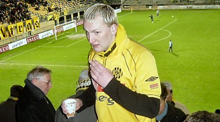
Wil de heer Bodnar zich ten spoedigste bij de selectie vervoegen!
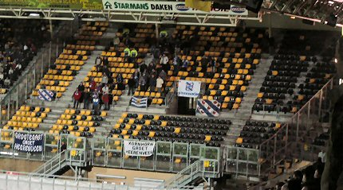
Zoals verwacht weinig Heerenveensupporters die hun spaarcentjes
nodig
hebben voor de match tegen Newcastle United.
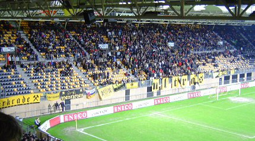
Het stadion was toch al mager bezet. Door het slechte weer zocht
iedereen
het hogerop.
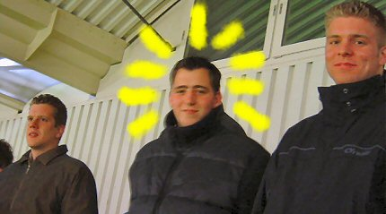
Een wonder is geschied, Rick E is weer onder ons.
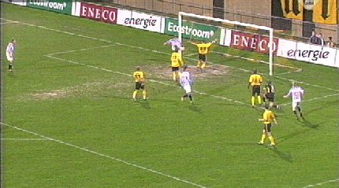
In de 15e min. is er een buitenspeldoelpunt van Väyrynen.
Scheidsrechter
Van Egmond keurt het doelpunt echter goed.
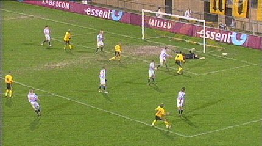
Bodnar is ongelukkig bij een ferme pegel die op de paal belandt.
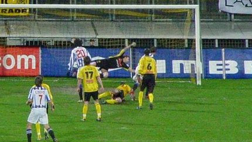
In de 55e. min. scoort Väyrynen 0-2
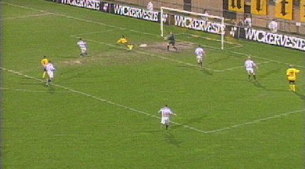
Cristiano is amper vervangen door Cissé als deze op aangeven van
Koné
1-2 scoort (62').
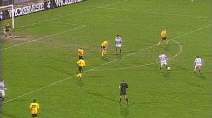
Roda haalt alles uit de kast om er minstens nog een gelijkspel
uit te halen,
maar de goal valt aan de verkeerde kant: 1-3, Nilsson (78').
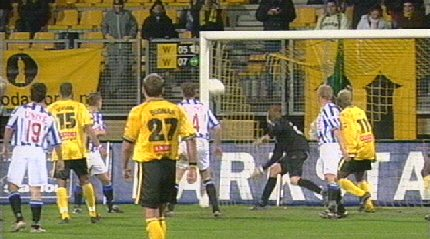
Een hoekschop van Jongen wordt ingekopt door Kah: 2-3, (87').
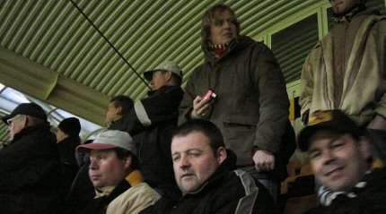
Roda komt tijd te kort om nog een doelpunt te forceren. Deze
lieden zien
het gelaten aan.
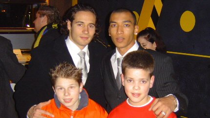
Bodor en Sofiane bezochten de Kick-Off.
Nu Roda definitief voor rechtstreekse plaatsing Europees voetbal
heeft
afgehaakt wordt Intertoto de vlucht-optie!